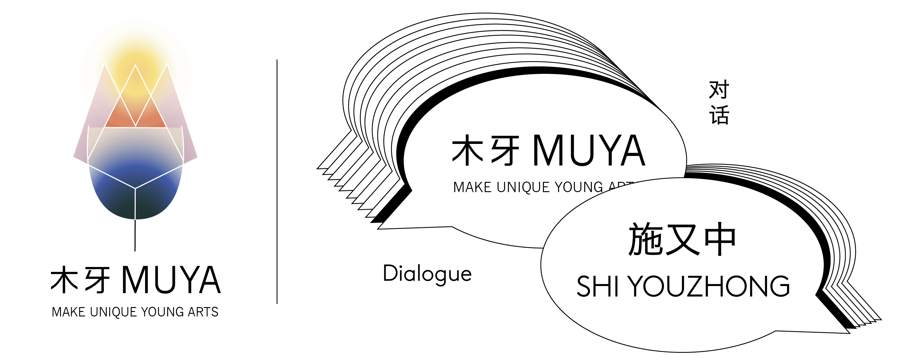

明暗之间看见色彩 | 施又中
欢迎来到木牙Make Unique Young Arts，让我们一起来探索那被我们遗忘的日常！
“生活中从不缺少美，而是缺少发现美的眼睛。” 这是我们经常听到和看到的一句话。在城市中长期工作的我们，适应了快餐式文化拥有了欣赏时尚服饰和皮包的眼睛，却在不知不觉中遗失了发现自然之美的眼睛。自然与人一直是相辅相成的关系，在我们无法释怀和忧郁乏闷时，会下意识的看向窗外，让意识流动起来，从而放松。
"Life is never short of beauty, but short of eyes to find it." This is a phrase we often hear and see. Having worked in the city for a long time, we have adapted to the fast food culture and have the eyes to appreciate fashionable clothes and leather bags, but we have lost the eyes to find the beauty of nature unconsciously. Nature and human beings have always been mutually reinforcing. When we can't let go and feel depressed, we subconsciously look out the window to let our consciousness flow and relax.
不管是看着天空，身处树林，乘船垂钓，倾听鸟鸣，策马扬鞭，还是演奏琴曲.....我们都需要找到心中的那片宁静，然后才能回看初心，思考未来。而今天来到木牙MUYA做客的画家施又中，把她心中的这片宁静分享给大家～让我们来一起跟随她的眼睛来欣赏这别样的美景和倾听她对于作画独特的见解吧！
Whether it's looking at the sky, being in the woods, taking a boat to fish, listening to birds, riding horses to whip, or playing music... We all need to find that peace of mind before we can go back to our original mind and think about the future. Today, the painter Shi Youzhong comes to MUYA to share the peace in her heart. Let's follow her eyes to enjoy the beautiful scenery and listen to her unique views on painting.
施又中
1972 年出生于台湾,毕业于中国文化大学戏剧学系。现专职艺术创作,绘画资历超过 10 年,以西画压克力彩及水彩为主要创作媒材。曾参加多次台湾之联展及个展,作品亦受邀至美国纽约、韩 国、南美洲、东欧、中东地区展出。
SHI YOUZHONG
She was born in Taiwan in 1972 and graduated from the Drama Department of Chinese Culture University. She is a professional artist with over 10 years' painting experience. She is mainly engaged in acrylic and watercolor painting.
Her works have also been exhibited in New York, South Korea, South America, Eastern Europe and the Middle East. Her works are based on nature, and she loves nature's rich variety of colors and seasons. The application of bright saturated color, by irregular shape and different chroma color blocks interlacing configuration, in a plain painting way, to simplify the details of the objective scenery. It emphasizes the coordination between color and form, presents the spatial, rhythmic and freehand sense of color, and creates new images and resonances in vision, which is my praise to nature and also a way to express myself.

"我没有专属的个人工作室,我的房间就是我画画的地方,我有一个画架和一张小折叠桌, 我所有的作品都是在这上面完成的。我希望将来能有一间独立的工作室能让我尽情的运用而不必担心空间大小的问题。"
"I don't have my own studio, my room is where I paint, and I have an easel and a little folding table, This is where all of my work is done. I hope I can have an independent studio in the future so that I can use it freely without worrying about the size of space."


"创作取材于自然,喜爱大自然丰富万千的色彩变化及四季幻化的不同风貌。运用鲜明饱和的色彩,藉由不规则形状及不同彩度的色块相互交错配置,以平涂的表现方式,将客观景物的细节予以简化。"
"强调色彩与形体之间的协调性,呈现出色彩的空间性及律动感、写意感, 并在视觉上产生新的意象和共鸣,这是我对大自然的颂赞, 也是一种表达自我的方式。"
"My works are based on nature, and I love nature's rich variety of colors and seasons. The application of bright saturated color, by irregular shape and different chroma color blocks interlacing configuration, in the way of flat painting, the objective details of the scenery will be simplified."
"It emphasizes the coordination between color and form, presents the spatial, rhythmic and freehand sense of color, and creates new images and resonances in vision, which is my praise to nature and also a way to express myself."
➤ 木牙MUYA:作为画家,创作了这么多优秀的美丽的作品，您最想通过画作传达给普通公众什么?
As a painter, what do you want to convey to ordinary people through your paintings?
施又中 Youzhong Shi:我希望透过我的画作呈现出柔美及宁静的和谐,为观者带来快乐放松及疗愈心情的正面能量。我相信艺术是最佳的心灵写照,创作的过程是反应心性和美感,除了情感宣泄也是一种疗愈,越接触艺术,人的美感与心灵也能相对的提升。我希望透过画笔的温度来慰藉人们内心深处的孤寂,或是充实心灵的满足,彩绘出大千世界的种种美好。
I hope to present a gentle and peaceful harmony through my paintings, and to bring happy , relaxing and positive energy to the viewer to heal their mood. I believe that art is the best portrayal of the soul, and the process of creation is to reflect the heart and beauty.
Besides emotional catharsis, it is also a kind of healing. The more contact with art, people's beauty and soul can also be improved relatively. I hope that through the temperature of the paintbrush to comfort the loneliness in the heart of people, or to enrich the satisfaction of the soul, painting all kinds of beautiful worlds.
➤ 木牙MUYA:您的绘画,绘制出了色彩缤纷的世界,颜色的明度高,纯净度也很高,这些颜色在大自然中是很难见到的,您是如何通过内心的需求和大自然环境的真实色彩衡量取色,并进行色彩解构的呢?
Your paintings paint a colorful world with high brightness and purity. These colors are hard to see in nature. How do you measure and deconstruct colors through your inner needs and the true colors of the natural environment?
施又中 Youzhong Shi:画画并不是盲目地去复制现实,而是寻求各种关系的和谐。瑞士艺术家杰克梅第曾说:「艺术品不是 真实再现, 而是创造具有相同强度的真实」。我认为大自然存在着各种彩度及明度,其广度是无法想像的丰富,端看人们是否用心去察觉观察它。
我个人很喜爱剪影式的影像风格,其高度对比及简化的影像使其看起来像是由大片粗剪的色纸建构而成,我将此风格运用在我的画作上,为了让整体视觉和谐,所以需要将各种色彩进行调和重组,让画作最终呈现出缤纷却又协调的效果。我并不想复制自然,我觉得任何色彩没有绝对的好坏,只有色彩与色彩之间的关系是否正确,对的色彩、对的份量摆在对的位置,便能创造出美感与空间,这就是我作品的独特风格。
Painting is not about blindly copying reality, but about seeking harmony in relationships. Swiss artist Alberto Giacometti once said: "The object of art is not to reproduce reality, but to create a reality of the same intensity." I think that there are colours and lightness in nature, in unimaginable riches, which depend on whether one carefully and seriously observes.
I personally love the silhouette type image style, its high contrast and simplify the image to make it look like a construction by rough cut sheets of colored paper, I will use this style in my painting, in order to make the overall visual harmony, so need to all sorts of color to mediate the restructuring, let paintings eventually present a colorful and coordination effect.
I don't want to copy nature. I don't think any color is absolutely good or bad, only whether the relationship between color and color is right or not. If the right color and weight are placed in the right position, the beauty and space can be created, which is the unique style of my works.
➤ 木牙MUYA: 为什么会想到以平涂的表现方式来作为自己的独特的绘画风格?在您的简介中说到「线是不存在的,明暗也不存在,只存在色彩之间的对比。」可以详细介绍想法来源吗?
Why do you think of using flat paint as your own unique painting style? In your introduction, it says, "There is no line, there is no light and shade, there is only contrast between colors." Can you elaborate on the source of the idea?
施又中 Youzhong Shi: 现代艺术之父塞尚他认为「线是不存在的,明暗也不存在,只存在色彩之间的对比。物象的体积是从色调准确的互相关系中表现出来」,「色彩丰富到一定程度,形也就成了」塞尚在讲到他的画时, 经常重复这句话。
他十分注重表现物象的体量感和画面的深度,为此他摒弃了线性透视法,而这种体量感不是靠线条表现出来的,而是靠作者自由组合的色彩块面表现出来的。我个人很欣赏塞尚的作品与他对于自己绘画理念的实践及坚持。
我会选择运用色块构图的方式是因为我觉得运用此方式,可以让图像呈现出很好的立体感,而且平面色块的构图比传统的写实画法更具有张力。这样的色块就像一大片粗剪的色纸一样,层层堆叠出景深及立体感,这种剪影风格很吸引我,能给予人更多的遐想与趣味。我觉得无阴影的平涂一样可以带来立体效果和体积感,鲜明的色彩更具有装饰效果
Paul Cézanne, the father of modern art, believed that there is no line, no light and shade, but only the contrast between colors.
The volume of an image is reflected in the accurate interrelation of colors, and to a certain extent, the color becomes the form, which Cézanne often repeated when talking about his paintings. He attaches great importance to the representation of the massing sense of objects and the depth of pictures, so he abandons the linear perspective method.
Such massing sense is not reflected by lines, but by the free combination of color blocks. I personally appreciate Cezanne's work and his practice and insistence on his own painting ideas.
I choose the way of color block composition because I think this way can make the image present a good sense of three-dimensional, and the composition of flat color blocks has more tension than the traditional realistic painting. Such color blocks are like a large piece of color paper, stacked layer by layer to give a depth of field and three-dimensional sense. This style of silhouette attracts me very much, which can give people more reverie and interest. I think the flat paint without shadow can bring the stereo effect and volume feeling as well, the bright color has the adornment effect more.
➤ 木牙MUYA: 看到您的很多画作都有搭配您自己创作的诗歌,诗歌的创作和图像的绘制是不同的艺术传达方式,在您看来,文字,图形,色彩的表现方式存在着怎样的关系呢?
Seeing that many of your paintings are accompanied by poems created by yourself, the creation of poems and the drawing of images are different ways of artistic communication, In your opinion, what is the relationship between the expression of text, graphics and color?
施又中 Youzhong Shi:一幅绘画作品,无论其风格如何,总会有图形、色彩或文字这些元素, 要如何妥善运用这些元素则影响到画面的视觉传达效果。每幅画的背后都有画家想要表达的情感与想法,在未了解画家创作的动机与想法前,观者都是以自身的主观意识去感受诠释它。我在一幅画完成后会再搭配诗歌,是想尝试以文字的形式去表达我内心的情感,这是一种自我训练。
我希望藉由诗歌文字呈现「意象」,结合绘画的视觉表现,透过诗画的意境与神韵,让观者赏画之余又能由诗句融入画中,达到「诗中有画、画中有诗」的意境。 「诗是无形画、画是有形诗」就好比读一首好诗可感受出一幅画的美妙, 而观看一幅画, 从画中可进而感受出一首诗的优美。
A painting, no matter what its style, will always have graphics, color or text such elements, how to properly use these elements will affect the visual communication effect of the picture. Behind each painting are the feelings and ideas that the artist wants to express. Before understanding the motives and ideas of the painter, the viewer interprets them with his own subjective consciousness. When I finish a painting, I will match it with poems.
I want to try to express my inner feelings in the form of words, which is a kind of self-training. I hope that by presenting "imagery" in the words of poetry and combining it with the visual expression of painting, the artistic conception and verisimum of poetry.
Painting can be integrated into the painting while the audience enjoys the painting, so as to achieve the artistic conception of "Painting in Poetry, Poetry in Painting". "Poetry is invisible painting, painting is tangible poetry" is just like reading a good poem can feel the beauty of a painting, while watching a painting, can feel the beauty of a poem.
➤ 木牙MUYA: 画家的职业有别于常规早八晚五的职业作息,你觉得画家独特的工作状态和工作经历在你的生活中占据着什么样的色彩呢?
The profession of painter is different from the regular 8 to 5 professional work and rest, you feel the painter's unique working state and work experience in your life. What kind of colors do they occupy?
施又中 Youzhong Shi: 在作为专职画家之前,我是一名上班族,过着朝九晚五的生活。在成为画家之后,在时间的运用上当然是自由弹性许多,我多出很多时间来做我自己喜欢的事情-画画,这虽然看起来很美好,但是若没有良好的自律能力再加上人的惰性,这可能会让人懒散、生活无所事事而浪费生命。
另外画家的独特工作状态也会遭致人们的疑惑与嘲讽,因为经济来源的问题是最为现实的,所以我会砥砺自己持续的创作、参加许多国内外展览,给自己寻求更多机会让作品增加曝光机会并尝试新的事物,除此之外充实自己的内在、为自己设定目标也很重要!
总之画家之路不好走并且是孤独的,但这条路是自己的选择,很多人在半途中就放弃退出了,也有很多人梦想还没开始就被扼杀在现实当中,所以放好自己的心态,坚持到底、勿忘初衷,我想这是作为一名画家必须要有的心态!
Before I became a professional painter, I was an office worker, leading a life of going to work at nine in the morning and ending my work at five in the evening. After becoming a full time painter, I have a lot of freedom and flexibility in the use of time. I have a lot of time to do what I like. which sounds good, but without good self-discipline and laziness, people may waste their lives by being lazy and idle.
Another painter's unique state of work will cause confusion and ridicule. Because the economic source of the problem is the most realistic, I will emulate continuous creation to participate in many domestic and international exhibitions. To give myself more opportunity to increase the chance of exposure and try new things. In addition to enriching their own inner, setting a goal for yourself is also very important!
In a word, the path of a painter is not easy and lonely, but it is our choice. Many people give up and quit in the middle of the road, and many people's dreams are killed in reality before they start. So put your mind, stick to it, and don't forget the original intention. I think this is the mentality that you must have as a painter!
➤ 木牙MUYA:是什么原因让作为戏剧系毕业的您,转做画家?您觉得戏剧系的学习,对您之后的绘画经历中有什么助力吗?
What is the reason for you, who graduated from the drama department, to become a painter? What kind of department has contributed to your later painting experience when you study the drama?
施又中 Youzhong Shi:我觉得任何艺术的本质皆是相通的, 戏剧和美术、音乐一样,都是人类最原始的心灵追求、与生俱来的本能、最起码的人生享受,它们的诉求都是在于能够引起内心的情感认同而产生「感动」,所以学戏剧与当画家并不冲突,都是自我情感表达的一种方式。
从我开始画画以后,就对它产生很大的兴趣,因为它能带给我力量、平静、感动与成就感! 我非常喜爱色彩,含蓄的色彩令人感到温馨和谐;强烈的色彩能振奋人心醒目愉悦;暗色调的色彩令人心平气和冷静清爽;对比色的配合,使画面跃动;调和色彩的配合使画面更为穏定,诸多色彩的运用正如戏剧的编导是最高“艺境”的创作。
I think the essence of any art is interlinked, drama, like art, music. They are the most primitive human mind pursuit, natural instinct, the very least way to enjoy life. Their demands are caused by the ability to "move" inner emotional identity, so learning drama is not conflict with being a painter, it is a way of self emotional expression.
Since I started painting, I have been interested in it, because it can bring me strength, peace, moving and a sense of achievement! I love color very much, implicit color makes people feel warm and harmonious; Strong colors can be inspiring, eye-catching and joyful; Dark colors make people calm and cool; The matching of contrasting colors makes the picture jump; The coordination of colors makes the picture more stable, and the application of many colors is just like the director of the drama is the highest "artistic" creation.
➤ 木牙MUYA: 在成为画家期间道路是不是总是一帆风顺的?经历过哪些挑战吗?or 在经历事业困难期时是怎么度过的?
Was it always a smooth path to become a painter? Have you experienced any challenges? Or what do you do when you go through a difficult period in your career?
施又中 Youzhong Shi:从念小学时就喜欢画画、音乐,后因升学压力的关系,上初中后就停止这些学习了。直到36 岁前经历了一些人生的低潮期,觉得为何不去做自己真正喜欢的事情,后来想到既然喜欢艺术那就去学画画吧!在2012 年我办了一个小个展,得到许多亲朋好友们的鼓励与支持,后来从2014 年起参加了许多艺博会,作品也入选了一些比赛,给了我很大的信心与成就感,找到了属于自己真正的梦想。
后来于2015 年,在家人的支持下,便全心投入绘画创作,很感谢这一路走来帮助我的朋友们。画家的道路崎岖孤独,这需要很大的热情与毅力才能持续下去。 「坚持到底,勿忘初心」使我更确定了自己对绘画的热爱与坚持,每一种生活体验都是最宝贵的人生经验,现在的我们就是过去经历的集结。我相信做好自己喜欢的事、放好心态,生命冥冥中自有安排! 只要找到自己喜欢做的事,任何 时候开始都不算晚!
I liked painting and music when I was in primary school, but I stopped when I was in junior high school due to the pressure of entering higher school. Before the age of 36, I experienced some low points in my life. At that point I thought about why I am not doing what I really like. Later, I thought that since I like art, I should learn painting. In 2012, I held a small solo exhibition, which was encouraged and supported by many friends and relatives. Later, I participated in many art fairs since 2014, and my works were selected in some competitions, which gave me great confidence and a sense of achievement, and I found my true dream.
Later in 2015, with the support of my family, I devoted myself to painting. I am very grateful to the friends who helped me along the way. The path of the painter is rugged and lonely, which requires great enthusiasm and perseverance to continue. "Stick to the end, don't forget the original intention" has confirmed my love and persistence for painting. Every life experience is the most precious life experience, and now we are the collection of past experiences. I believe in doing what I like, putting a good attitude, life has its own arrangement! It's never too late to start as long as you find something you love to do!

木牙微信订阅号